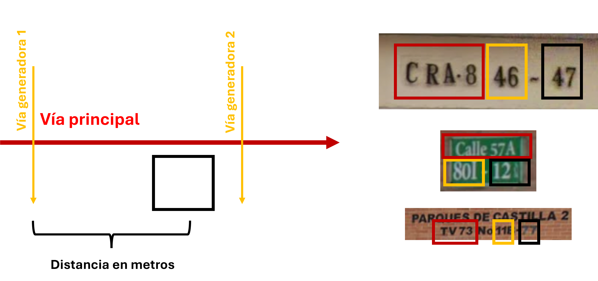
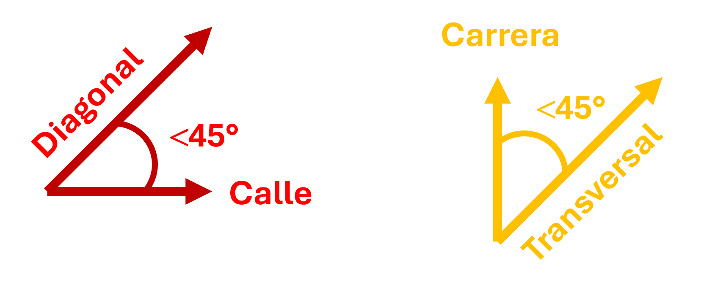
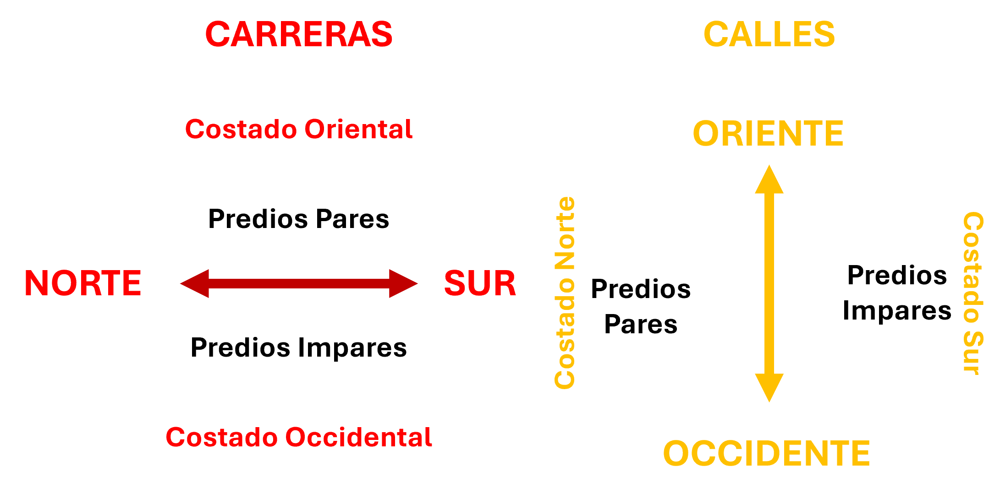

Geolocalización de incidentes
¡Bienvenidos y bienvenidas! Hoy desarrollarás el tercer módulo de formación del programa Operador de Recepción.
En este módulo realizarás lecturas y actividades que te permitirán adquirir los conocimientos básicos de geolocalización y utilizar herramientas de ubicación geográfica, para contribuir a la precisión y la efectividad en la atención de incidentes en Bogotá.
1. Objetivos
- Identificar las localidades de Bogotá y su numeración
- Comprender la estructura del sistema vial y nomenclatura de la ciudad.
2. Temáticas Abordadas
- Conceptos básicos de geolocalización
- Aplicaciones y herramientas para la geolocalización
3. Actividades
Antes de comenzar, ubícate en un lugar cómodo, vas a desarrollar varias lecturas. Consigue un cuaderno, lápiz o esfero, o alguna herramienta digital para tomar apuntes.
¡Comencemos!
3.1 Conceptos básicos de geolocalización
La geolocalización es una herramienta fundamental que permite identificar y determinar la ubicación de personas, lugares o eventos. Como recordarás este es uno de los elementos clave a la hora de gestionar un incidente.
Una adecuada y precisa geolocalización facilita la planificación y disposición de recursos para la atención oportuna de las necesidades de la población que busca ayuda en el Sistema NUSE.
Actividad 1
¿Conoces al profe Jordi?
El profe Jordi es un reconocido docente del sector público quien se ha hecho famoso por desarrollar ejercicios prácticos en redes sociales para enseñar a sus estudiantes sobre diversos temas.
En esta oportunidad nos va a impartir una clase sobre las bases de la geolocalización en la ciudad de Bogotá, escucha con atención y toma nota.
@elprofejordi ¿Cómo ubicarme en Bogotá? 🌎🗺 Si la escuela es el lugar por excelencia para conocer el mundo en el que vivimos, esta clase no puede faltar. Yo esto de las direcciones lo supe muy tarde, ¿ustedes ya lo sabían? 🤔
#colegio #escuela #soyprofe #maestras #maestros #bogota #elprofejordi
Abrir el video directamente en TikTok
Después de ver el video, anota las respuestas a las siguientes preguntas:
- ¿Cuál es localidad y barrio donde vivo?
- La nomenclatura de tu dirección ¿Tiene sector geográfico SUR, ESTE o ninguno?
- Actualmente ¿Vives en apartamento, conjunto cerrado, casa, sector rural o urbano?
Recuerda al gestionar un incidente, deberás formular las preguntas establecidas en el documento Guiones, para para indagar sobre la ubicación:
Señor./Señora ¿Dónde se ubica?
Bríndeme la dirección
Deme un punto de referencia
3.2. Nomenclatura domiciliaria
De manera más específica, las direcciones de Bogotá permiten identificar un predio de manera precisa. Para ello, deberás considerar sus componentes:
Vía Principal: Vía sobre la cual está ubicado el acceso principal del predio.
Vía Generadora: Eje vial de menor denominación numérica que tiene intersección con la vía principal.
Número de predio: Distancia aproximada en metros desde el eje generador o de referencia hasta el acceso al predio (par o impar según el sentido de la vía principal).

Ahora bien, la ciudad no es una cuadricula perfecta. Por el contrario, resultado del particular proceso de urbanización, las calles y carreras están acompañadas de letras de la A a la Z, el sufijo BIS o los puntos cardinales ESTE o SUR. En ocasiones una combinación de ellos, a veces ninguno y en otros casos todos simultáneamente.
3.3. Nomenclatura Vial
Bogotá tiene calles y carreras principalmente. Estas vías vienen acompañadas por una numeración consecutiva, en ocasiones una denominación o alias, y algunas veces los puntos cardinales. Deberás tener en cuenta:
Numeración: Calles y carreras se identificación números consecutivos que inician con el 0, e incrementan progresivamente. Para evitar tener una numeración negativa, en la ciudad se usan los puntos cardinales SUR para calles y ESTE para carreras.
Alias: Calles y carreras pueden estar acompañadas por la denominación Avenida, desde luego dependerá del tamaño de la vía (i.e. Avenida Carrera 68 o Avenida Carrera 7). De igual manera, las vías pueden tener un nombre, el cual es definido por el Consejo de Bogotá (i.e. Avenida Boyacá, Avenida Guacamayas, Norte-Quito-Sur, o la Avenida La Sirena).
Diagonales y Transversales: Las vías no siempre son paralelas, pueden tener inclinaciones. Cuando hay una inclinación de hasta 45° de las calles, las vías se denominan diagonales. Cuando la inclinación es respecto a las carreras, las vías de denominan transversales.

3.4. Sentido de la vía
Las calles atraviesan la ciudad de oriente a occidente o de occidente a oriente. Por su parte las carreras atraviesan la ciudad de norte a sur o de sur a norte.
Según el sentido de la vía, los números de los predios serán impares o pares. Ten en cuenta los siguientes criterios:

Actividad 2
Hasta ahora, hemos identificado los elementos comunes para ubicar a una persona, un lugar o evento dentro de la ciudad. La segunda actividad que deberás desarrollar será realizar un resumen, una infografía o una presentación de una sóla diapositiva.
Puedes apoyarte de cualquier recurso tecnológico: Power Point, Canva, Chatgpt, Claude, Gemini o cualquier otro con el que te sientas familiarizado para esta actividad
3.5. Localidades
Bogotá se encuentra dividida administrativamente en Localidades, más específicamente, 20 unidades político-administrativas. Las vías de la ciudad definen muchos de los límites entre las localidades, mientras los perímetros urbanos definen los límites con los municipios de Cundinamarca.
Al recibir una llamada de emergencia, deberá conocer identificar la localidad desde la cual te están reportando la emergencia. Ya bien sea por su nombre o número. Las personas te pueden proporcionar cualquiera de los dos.
Actividad 3
Escoge una localidad, puedes ser aquella en la que vives actualmente. Vas a identificar los siguientes elementos de la localidad:
- Nombre y número
- Avenidas que dividen la localidad (nomenclatura numérica y Alias)
- Localidades con las que comparte límites
- Puntos de interés (lugares representativos de la localidad)
- Puntos de referencia (puntos de interés o vías) de inicio o fin de la localidad
3.6. Nomenclatura C4
Para documentar las direcciones que te reportan los ciudadanos deberás utilizar un sistema diferente con el cual no estás familiarizado.
En adelante, utilizarás la siguiente nomenclatura en tu día a día:
| Elemento | Nomenclatura |
|---|---|
| Calle | CL |
| Carrera | KR |
| Transversal | TV |
| Diagonal | DG |
| Avenida Calle | AC |
| Avenida Carrera | AK |
Además, deberás seguir la siguiente estructura
Vía principal + Numero + Complemento + Vía generadora + Número + Complemento + Numero de predio
Porjemplo, la dirección del C4 es Calle 20 No. 68 A – 20, según el sistema de nomenclatura que utilizará es:
CL 20 68A 20
Actividad 4
- ¿Puedes escribir tu dirección en este formato?
- Descarga el documento Ejercicio Práctico y realiza la actividad.
3.6. Otras herramientas
Por fortuna, actualmente no necesitas conocer toda la ciudad. A través de herramientas digitales es posible ubicar a la ciudadanía cuando llama a la Línea 123 de Bogotá
Actividad 5
Consulta y explora las siguientes páginas web:
4. Actividades de Trabajo Autónomo
Si llegaste hasta acá, has finalizado el módulo Geolocalización de incidentes
Envía por correo electrónico al Equipo de Capacitación todas las respuestas y actividades realizadas a la siguiente dirección:
equipocapacitacionc4@scj.gov.co
Utiliza como asunto: Modulo 3 – Nombres y apellidos
5. Evaluación
Evaluación del módulo
Ponte a prueba y realiza tu evaluación:
Formulario de evaluación
Lee cuidadosamente cada pregunta y responde el formulario.
Presentar evaluaciónEl formulario se abrirá en una nueva pestaña.